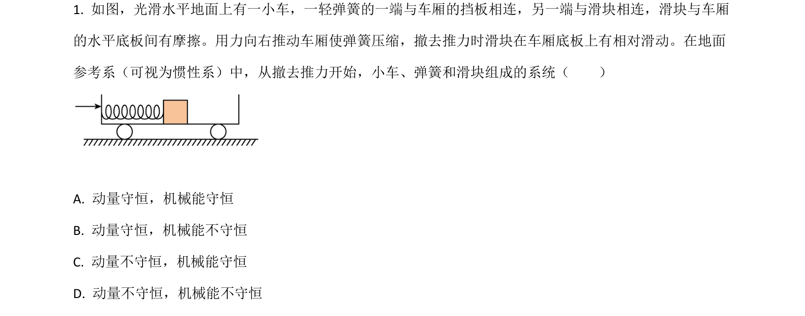
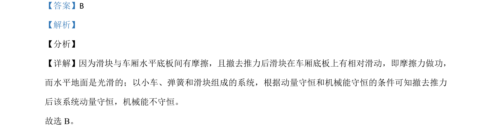

考点：动量守恒定律 机械能守恒定律 摩擦力做功

分析滑块与车厢有摩擦时系统动量守恒和机械能守恒的条件。

📄 原 PDF 第 1 页：
素材/真题/吉林/2008-2024·（吉林）物理高考真题/2021年高考物理试卷（全国乙卷）（解析卷）.pdf
【答案】B 【解析】 【分析】 【详解】因为滑块与车厢水平底板间有摩擦，且撤去推力后滑块在车厢底板上有相对滑动，即摩擦力做功， 而水平地面是光滑的；以小车、弹簧和滑块组成的系统，根据动量守恒和机械能守恒的条件可知撤去推力 后该系统动量守恒，机械能不守恒。 故选 B。